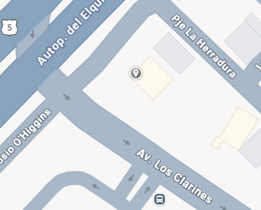

Encuentra nuestra guarida en C. Ambrosio O'Higgins 390, coquimbo.
Nuestros horarios de saqueo son de lunes a sabado de 7:00 am a 10:00 pm
¿Encontraste algo brillante? ¿dudas de nuestro cafe?cuentanoslo o dejanos tu rastro en nuestro formulario de contacto arriba